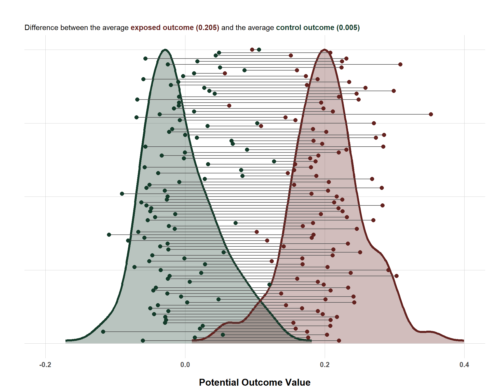
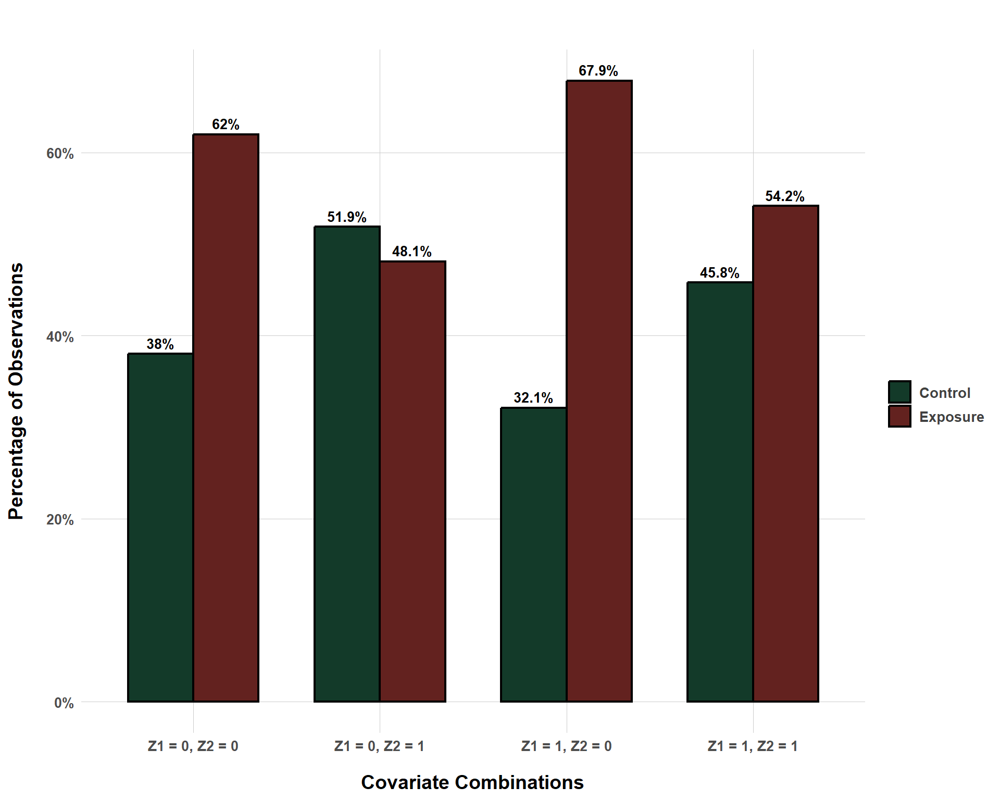
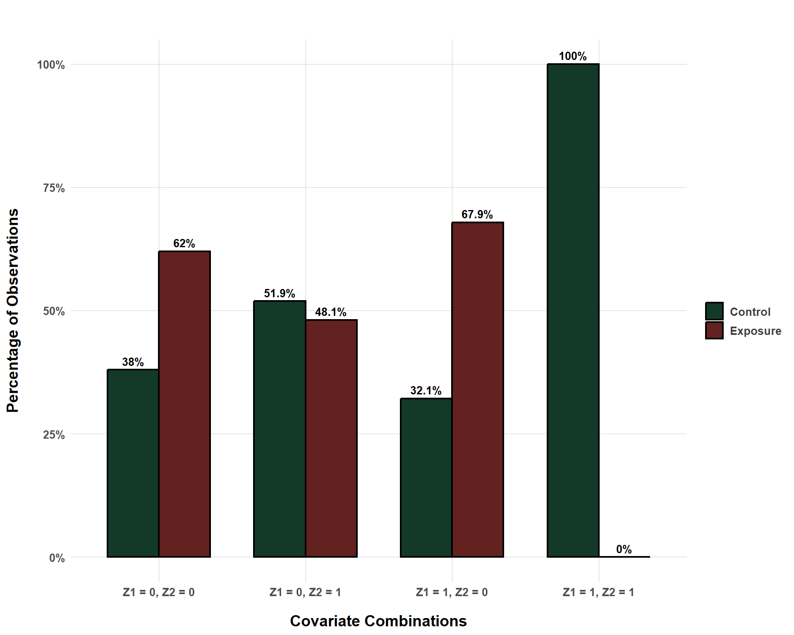
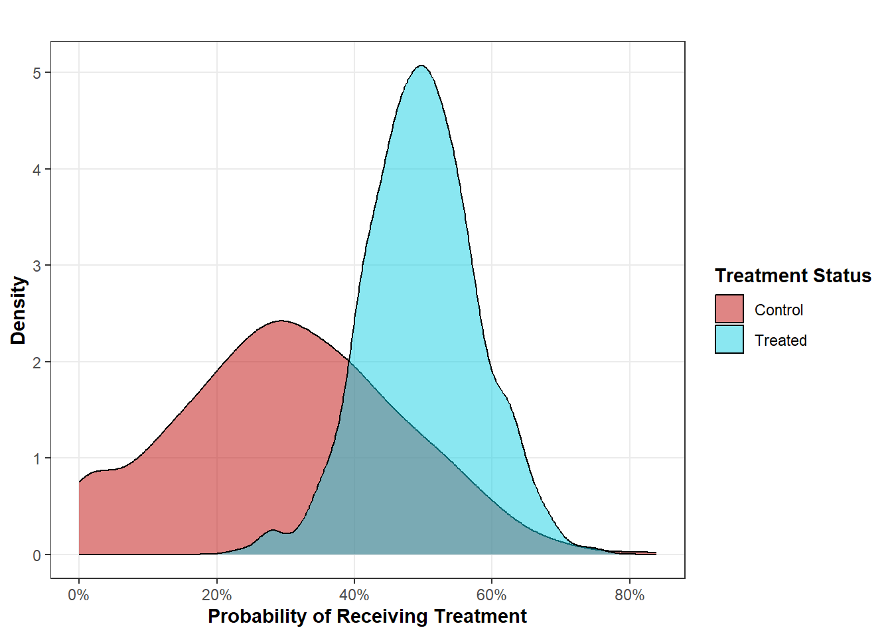

Be Wary of Regression-Based Causal Effects! (Or At Least Be Careful)…
causal inference
regression
Regression is the backbone of almost all of causal inference. Yet, it is not perfect and it can have unique issues (some of which it won’t even warn you about)! In this blog, we’ll tackle what this hidden potential problem is, how to identify it, and how to respond to it.
Published
May 26, 2025
Code
# Load Librariespacman::p_load("dplyr", # Data Manipulation"ggplot2", # Data Visualization"tidyr", # Re-Shaping"scales", # Scaling Visualizations"ggtext", # Colored Text in Plots"gt", # Nice Tablesinstall =FALSE)# Define a Custom Themeblog_theme <-function() {theme_bw() +theme(panel.grid.major =element_line(color ="gray80", size =0.3),panel.grid.minor =element_blank(),panel.border =element_blank(),plot.background =element_rect(fill ="white", color =NA),plot.title =element_text(face ="bold", size =16, margin =margin(t =0, r =0, b =15, l =0)),axis.title.x =element_text(face ="bold", size =14, margin =margin(t =15, r =0, b =0, l =0)),axis.title.y =element_text(face ="bold", size =14, margin =margin(t =0, r =15, b =0, l =0)),strip.text =element_text(face ="bold"),axis.text.x =element_text(face ="bold", size =10), axis.text.y =element_text(face ="bold", size =10), axis.ticks.x =element_blank(), axis.ticks.y =element_blank(), strip.background =element_rect(fill ="grey80", color =NA),legend.title =element_text(face ="bold", size =14),legend.text =element_text(face ="bold", size =10, color ="grey25"), )}# Establish a Custom Color Schemecolors <-c("1"="#133a29","2"="#ab3d29","3"="#f9ba6d","4"="#314318","5"="#63221f")
Regression is used reflexively in statistics, really regardless of what you’re trying to do. Clearly, the tool has earned its place and I am not targeting it. I use regression all of the time and will use it probably for as long as I live. However, in this blog, I am going to demonstrate what many others have already documented thoroughly.
Primarily, that researchers should be aware of their data and aware of what estimates regression can produce even if the data used to estimate a regression model violate key assumptions for making causal inferences. For this problem in particular, output from really any statistical package/software will not tell you “THIS IS A PROBLEM” when you, in fact, have run into this specific problem. Instead, the burden is on us as the researcher to catch the problem (if the problem exists).
Before getting to the problem itself, it is useful to return to the potential outcomes framework (POF) for making causal inferences. After reviewing the POF, the tricky thing about regression to be on the lookout for should be more apparent.
Refresher on Potential Outcomes
The POF is a way of conceptualizing and formalizing causality and causal effects. The basic idea is that we can identify a causal effect by looking a unit who is exposed or not exposed to some exposure of interest and compare their outcome to the exact same unit whose exposure status is different. By doing so, we isolate the effect of the exposure of interest and so we don’t have to worry about bias resulting from other things that affect the exposure and outcome of interest.
The fundamental problem of causal inference is that observing (in the case of a binary exposure, for example) both potential outcomes is impossible. You either received the exposure or you didn’t. We need both ingredients to know the causal effect (\(Y_{X_1} - Y_{X_0}\)) but we only ever observe one.
Thankfully, absent a time machine, clever designs and statistical methods allow us to make inferences about average causal effects rather than more precise individual-level causal effects. If we had access to individual-level causal effects, we could also make average inferences by taking the average of the exposed and control outcomes and then take the difference. Below is a plot that shows simulated potential outcomes for 100 units who are randomly assigned to exposure/control. Also, note that I got this plot idea from Dr. Julia Rohrer, so credit to her for this visualization.
Code
# Simulate Dataset.seed(1234)n <-100# Simulate Potential Outcomes and Random Treatment AssignmentY_X_0 <-rnorm(n, 0, 0.05)Y_X_1 <-0.2+rnorm(n, 0, 0.05)X <-rbinom(n, 1, 0.5)Y <-ifelse(X ==1, Y_X_1, Y_X_0)# Create a Data Framerandom_assignment <-data.frame(id =1:n,X = X,Y = Y,Y_X_0 = Y_X_0,Y_X_1 = Y_X_1)# Create a Long Data Setrandom_assignment_long <- random_assignment %>%pivot_longer(cols =c(Y_X_0, Y_X_1),names_to ="potential_type",values_to ="value") %>%mutate(potential_type =recode(potential_type,Y_X_0 ="Control",Y_X_1 ="Treated") )# Create a Wide Data Set for Connecting Linesrandom_assignment_wide <- random_assignment_long %>%pivot_wider(names_from = potential_type, values_from = value)# Extract Density for Treated and Control for Overlay PlottingY_X_0_dens <-density(random_assignment$Y_X_0)Y_X_1_dens <-density(random_assignment$Y_X_1)density <-bind_rows(data.frame(x = Y_X_0_dens$x, y =rescale(Y_X_0_dens$y, to =c(1, 100)), type ="Control"),data.frame(x = Y_X_1_dens$x, y =rescale(Y_X_1_dens$y, to =c(1, 100)), type ="Treated"))# Create the Dot Plots with Overlayed Distributionsggplot() +# Filled Density for Controlgeom_area(data = density %>%filter(type =="Control"),aes(x = x, y = y, fill = type),alpha =0.3) +# Filled Density for Treatedgeom_area(data = density %>%filter(type =="Treated"),aes(x = x, y = y, fill = type),alpha =0.3) +# Thicker Outline for Control Densitygeom_line(data = density %>%filter(type =="Control"),aes(x = x, y = y, color = type),size =1.5) +# Thicker Outline for Treated Densitygeom_line(data = density %>%filter(type =="Treated"),aes(x = x, y = y, color = type),size =1.5) +# Connect Lines Between Potential Outcomes Dotsgeom_segment(data = random_assignment_wide,aes(x = Control, xend = Treated,y = id, yend = id),color ="gray30",size =0.5) +# Dots for Potential Outcomesgeom_point(data = random_assignment_long,aes(x = value, y = id, color = potential_type),size =2.5) +scale_color_manual(values =c("Control"="#133a29", "Treated"="#63221f")) +scale_fill_manual(values =c("Control"="#133a29", "Treated"="#63221f")) +labs(title ="",subtitle ="Difference between the average <b><span style='color:#63221f'>exposed outcome (0.205)</span></b> and the average <b><span style='color:#133a29'>control outcome (0.005)</span></b>",x ="Potential Outcome Value",y ="",color ="Exposure Status",fill ="Exposure Status" ) +xlim(-0.2, 0.4) +blog_theme() +theme(axis.text.y =element_blank(),axis.ticks.y =element_blank(),legend.position ="none",plot.subtitle = ggtext::element_markdown(size =11) )

Distribution of Individual-Level Potential Outcomes
This plot connects each unit’s potential outcomes (via the gray line) between their known outcome when they are exposed (red) v. when they are not exposed (green). The average difference between the two 0.2 units which, if you look at the simulation code, is the exact causal effect that I specified it to be.
But, as I said before, we only ever know one of the potential outcomes. We will never know both, but we are still interested in estimating the average causal effect. How do we do this? Well, because I randomized which units were actually exposed to the exposure (\(X\)), this allows us to estimate the average causal effect free from bias (check out this blog post if you want to know how that process works).
And because \(X\) is randomized, I can simply regress the observed outcomes on the randomized exposure and I should also get 0.2 (the average causal effect we know to be true because I simulated data explicitly ordering it to be as such!)
lm(Y ~ X, data = random_assignment)
Call:
lm(formula = Y ~ X, data = random_assignment)
Coefficients:
(Intercept) X
-0.002366 0.199678
Yup, and that’s what we see! 0.199678 is pretty close to 0.2! But, what happens when \(X\) is not randomly assigned? Here, we run into a challenging problem. Many researchers address this by operating under a causal identification strategy known as “selection on observables” (see more about this here) where we statistically adjust for each variable that influences both \(X\) and \(Y\). But that itself introduces some problems that we will get into for the next section.
And yes, these problems are the ones that warrant the caution about regression that this blog is titled after.
Positivity/Common Support
A key assumption for causal inference is the positivity assumption (also known as common support). The key point is that, within each combination of covariates (aka stratum), the probability of any unit being exposed to the exposure is non-zero. That is, however the data is separated (i.e. \(Z_1\) = 1 and \(Z_2\) = 1 or \(Z_1\) = 1 and \(Z_2\) = 0, etc.), there should always be a possibility for exposure.
The following plot demonstrates this by looking at an exposure-outcome relationship confounded by two binary confounders. It plots the percent of observations that, within each covariate combination, are exposed v. control.
Code
# Simulate Dataset.seed(1234)n <-10000# Simulate Potential Outcomes and Random Treatment AssignmentZ1 <-rbinom(n, 1, 0.3)Z2 <-rbinom(n, 1, 0.7)X <-rbinom(n, 1, prob =plogis(0.5+0.3* Z1 +-0.6* Z2))Y_X_0 <-0+0.4* Z1 +0.7* Z2 +rnorm(n, 0, 0.25)Y_X_1 <-0.2+0.4* Z1 +0.7* Z2 +rnorm(n, 0, 0.25)Y <- Y_X_1 * X + Y_X_0 * (1- X) # Create a Data Frameconfounded <-data.frame(id =1:n,X = X,Y = Y,Y_X_0 = Y_X_0,Y_X_1 = Y_X_1,Z1 = Z1,Z2 = Z2)# Create a Grouped Bar Plot to Show Exposure/Control Distribution per Covariate Combinationconfounded %>%mutate(group =paste0("Z1 = ", Z1, ", Z2 = ", Z2)) %>%count(group, X) %>%group_by(group) %>%mutate(percentage = n /sum(n) *100,status =ifelse(X ==1, "Exposure", "Control")) %>%ungroup() %>%ggplot(aes(x = group, y = percentage, fill = status)) +geom_bar(stat ="identity", position ="dodge", width =0.7, color ="black", size =0.75) +geom_text(aes(label =paste0(round(percentage, 1), "%")),position =position_dodge(width =0.7),vjust =-0.5, size =3.5, fontface ="bold") +scale_fill_manual(values =c("Control"="#133a29", "Exposure"="#63221f")) +scale_y_continuous(labels =function(x) paste0(x, "%")) +labs(title ="",x ="Covariate Combinations",y ="Percentage of Observations",fill ="" ) +blog_theme()

Exposure/Control Distribution Across Covariate Combinations
Even though, within each stratum, the distribution of the exposure is not even, the probability is all non-zero. To put this in other terms, we observe both exposed and control for units where \(Z_1\) = 0 and where \(Z_2\) = 0, we observe both exposed and control for units where \(Z_1\) = 0 and where \(Z_2\) = 1, etc. Within each stratum, we are able to observe counterfactuals for each exposure condition (exposed v. control) and are thus able to reconstruct the potential outcomes.
This situation is good, but it is also incredibly naive (for one, there are only two binary confounders… very unlikely in real life.) We also are lucky because we happen to not struggle with a positivity violation here. But what might such a violation look like?
Violating Posivity with Regression is Easy!
To dive into this question, I am going to borrow from the same data, but I am going to make it so that the stratum \(Z_1\) = 1 and \(Z_2\) = 1 are never exposed.
Admittedly, the way I am handling a lack of overlap is a bit heavy handed. As you can see in the code, I am simulating a data set where there is full treatment overlap in the covariates, but I am artificially creating a new data set from the simulated one where one combination of covariates results in the exposure always being 0. However, there are several ways that this could happen with real data.
For example, perhaps simply due to sampling error, you manage to get a combination of covariates where there is only one treatment status. Or, perhaps we naturally observe in the world that a specific combination of covariates happens to always lead to one treatment status. For example, assume that the exposure of interest in a certain study is a binary indicator of civil conflict. Imagine that I control for GDP per capita and the presence of a UN peacekeeping operation. I imagine that it is very unlikely to ever observe an instance where a rich country that does not have a UN peacekeeping operation is also experiencing a civil war. This probably sounds a bit niche, but a lack of overlap might not be incredibly systematic. It truly might only exist in one stratum of your data.
But, all that being said, the following bar plot helps visualize why a lack of overlap is an issue.
Code
# Create a Grouped Bar Plot to Show Exposure/Control Distribution per Covariate Combinationlack_overlap %>%mutate(group =paste0("Z1 = ", Z1, ", Z2 = ", Z2)) %>%count(group, X) %>%mutate(status =ifelse(X ==1, "Exposure", "Control")) %>%select(-X) %>%complete(group, status, fill =list(n =0)) %>%group_by(group) %>%mutate(percentage = n /sum(n) *100) %>%ungroup() %>%ggplot(aes(x = group, y = percentage, fill = status)) +geom_bar(stat ="identity", position =position_dodge(width =0.7),width =0.7, color ="black", size =0.75) +geom_text(aes(label =paste0(round(percentage, 1), "%")),position =position_dodge(width =0.7),vjust =-0.5, size =3.5, fontface ="bold") +scale_fill_manual(values =c("Control"="#133a29", "Exposure"="#63221f")) +scale_y_continuous(labels =function(x) paste0(x, "%")) +labs(title ="",x ="Covariate Combinations",y ="Percentage of Observations",fill ="" ) +blog_theme()

Exposure/Control Distribution Across Covariate Combinations with Positivity Violated
So, in the \(Z_1\) = 1 and \(Z_2\) = 1 stratum, all units are control observations… What consequence might that have for estimating the causal effect of the exposure (\(X\))? Well, recall that the true causal effect is 0.2. And, we can demonstrate that we can estimate this causal effect even with confounders through the following regression:
lm(Y ~ X + Z1 + Z2, data = confounded)
Call:
lm(formula = Y ~ X + Z1 + Z2, data = confounded)
Coefficients:
(Intercept) X Z1 Z2
-0.003636 0.201851 0.398327 0.700668
So, that being said, how does the coefficient for \(X\) change using the data where the positivity assumption is violated? Let’s check that out!
lack_overlap_mod <-lm(Y ~ X + Z1 + Z2, data = lack_overlap)lack_overlap_mod
Call:
lm(formula = Y ~ X + Z1 + Z2, data = lack_overlap)
Coefficients:
(Intercept) X Z1 Z2
-0.01668 0.18888 0.47062 0.72909
As we can see, we have found some bias even though all the confounders are accounted for. So clearly, violating the positivity assumption, in some way, matters for estimating unbiased causal effects. But… how exactly does that work? Well, the bias can be explained, in part, by what is happening on a more micro-level.
Reporting average marginal effects (AMEs) is a popular strategy for reporting predicted causal effects from regression output. I bring this up because how AMEs are calculated can help demonstrate where the bias of positivity violations comes from.
The basic idea of AMEs is this:
Estimate a model regressing the outcome on the exposure of interest + all confounders
Use the model to predict the outcome by “plugging in” the exposure and confounder values. For example, if a unit was exposed to treatment and had a \(Z1\) and \(Z2\) value of 0, than the marginal effect for that unit, using our biased regression model, would be calculated using: \(Y = -0.017 + 0.189 (1) + 0.471 (0) + 0.729 (0)\). So, for this unit, the predicted outcome when exposed to the treatment would be 0.172
Use the model to predict the potential outcome by changing the exposure value in the regression equation. Again, using our hypothetical example, we are going to “plug in” all the same values but just change the exposure value to control, which would look like: \(Y = -0.017 + 0.189 (0) + 0.471 (0) + 0.729 (0)\). So, for this unit, the predicted outcome when not exposed to the treatment would be -0.017.
Take the difference between the observed predicted outcome and the counterfactual predicted outcome: 0.172 - -0.017 = 0.189 (this is our coefficient!)
Do this for every unit and take the average difference of the differences. That is our average marginal effect.
So how do AMEs help explain why our coefficient becomes biased when positivity is violated? Well, let’s return to our pesky stratum of \(Z_1\) = 1 and \(Z_2\) = 1. Remember, we know that all units in this stratum are controls. So we can predict the outcome for these units easily by: \(Y = -0.017 + 0.189 (0) + 0.471 (1) + 0.729 (1)\) which sums to 1.183. Easy enough, but what about the next step. We want to know the counterfactual and that formula would be: \(Y = -0.017 + 0.189 (1) + 0.471 (1) + 0.729 (1)\).
Uh-oh… we already know that, within the \(Z_1\) = 1 and \(Z_2\) = 1 stratum, no units are exposed… so how can we know what the impact of exposure would be? Well, our model will gladly give us a predicted outcome, but that outcome is not generated from any real data points within that stratum. In other words, it is made up! Or, in fancier terms, regression is extrapolating beyond the support of the data. It is making a guess without any data points as reference. That’s kind of a problem! And we see the fruits of this problem bear out in a biased coefficient.
Now, because I know what each potential outcome actually is (because I simulated it), we can do something really interesting where we estimate the predicted counterfactual outcome (when units in this stratum are exposed) and compare it to the true counterfactual outcome. So, that’s what the following table reports.
From the data set of 10,000 units, I randomly sampled observations from the \(Z_1\) = 1 and \(Z_2\) = 1 stratum and compared their predicted counterfactual outcome to the true counterfactual outcome. In an ideal world, our predicted counterfactual outcome is equivalent to the true counterfactual outcome.
And, unsurprisingly, we see that there is bias… No shocker there.
So, with all of this being said, what are you supposed to do if positivity is violated? Or, for the keen readers out there, how are you supposed to check for positivity? Most of us are working with adjustment sets that have continuous, ordinal, and count confounders in addition to binary confounders. And we certainly have a lot more than two… How are you supposed to check for positivity under these conditions?
Checking for Posivity or Considering Other Approaches
In other words, we might say that realistic situations involve adjustment sets that are multi-dimensional. If we just had two binary confounders, we can check for overlap with a simple 2x2 square. But adding more confounders and more different types of confounders makes such a simplistic approach impossible.
One solution is to estimate a propensity score and check for overlap between exposed and control units. For those not familiar, the propensity score is simply the predicted probability of a unit receiving their level of exposure conditional on the confounders. You can do this with something as simple as a logit model. In the context of our simple two-confounders example, you could get propensity scores by:
ps_score_model <-glm(X ~ Z1 + Z2, data = confounded, family =binomial(link ="logit"))confounded$ps <-predict(ps_score_model, type ="response")
The propensity score is useful because it collapses all of the information from \(k\) confounders and summarizes what we need to know (the probability of receiving treatment) into one metric. Once we have obtained propensity scores, we can compare their distribution between the exposed and control units. Take, for example, a plot I made for another blog post below:

This plot shows us that, for treated units, the probability of receiving treatment ranges from about 20% to about 80% while the distribution for control units ranges from 0% to about 80%. What do we learn from this? Well, it shows us that, for the analysis of treated units, there are potentially comparable control units that can allow us to estimate the potential outcomes for the treated units. In other terms, for each propensity score that a treated unit may have, there is at least one other control unit that has the same propensity score.
So, propensity scores are one potential for evaluating positivity, but… isn’t there still a problem here? What about the control units whose propensity scores range from 0% to 19%? According to the propensity scores, we can’t estimate potential outcomes for these units. And, in this case, that would be correct, but it doesn’t mean that your study would be doomed. One solution to violations of positivity is simply to answer another question.
Sure, in this case, you wouldn’t be able to estimate the potential outcomes for every unit in your study, but you can estimate the potential outcomes for every treated unit. This gets to the concept of an estimand or a targeted theoretical value that you are trying to estimate. The estimand is the ideal that we are searching for out in the wild and the estimate is our best attempt to locate it. Not every estimand requires as strict positivity assumptions.
Sure, if you want to estimate potential outcomes for every unit in your study, then you would need complete overlap. This is what is required to estimate the average treatment effect (ATE) that is often estimated in experimental designs where the treated and control units have the exact same probability of receiving treatment. But, as is the case from this example, the ATE may not always be a feasible estimand (and sometimes, it may not even be desired). Instead, for our purposes with this hypothetical example, we could instead estimate the average treatment effect for the treated (the ATT), which is exactly what it sounds like - the average effect of the treatment for the treated units. We make that caveat because, in this context, we would be unable to estimate the average effect of the treatment for the control units (this is known as the ATU or ATC).
Situated within the context of the positivity assumption, we violate positivity in our context dependent on the estimand we are targeting. For this example, we would violate positvity is we tried to estimate the ATE or ATU, but we would not violate positivity if we shot for the ATT. However, remember that we still should pay attention to specific stratum in our data that might be sneakily flying under the radar as well (such as the \(Z_1\) = 1 and \(Z_2\) = 1 example). It is still possible that such nuances could go undetected with a “dimensionality reduction” statistic like the propensity score. As always with anything causal inference related, know your data well and really dig into it looking for stuff exactly like this before diving into analysis. As regression demonstrates, not all methods will let you know when you’re violating a key assumption.